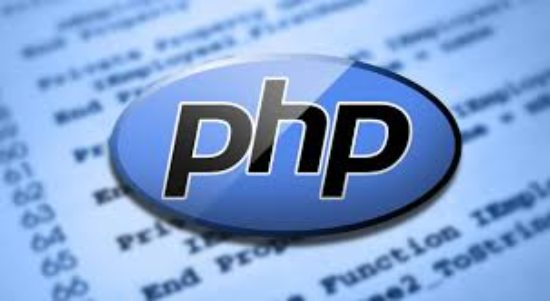

PHP is an open-source language used to create dynamic websites. It helps create webpages more interactive by adding features such as password protection. Many famous websites use PHP such as Facebook and Yahoo.
PHP is easy to use because you can simply embed the code inside HTML. If that wasn?t easy enough, there are hundreds of other platforms like WordPress that can help you develop websites.

advantages of PHP Programming language
1. Open source
It is developed and maintained by a large group of developers. This will help in creating a support community and abundant extension libraries.
2. Speed
It is relatively fast, since it uses not much system resources.
Easy to use: It uses a C like syntax, so for those who are familiar with C, it?s very easy for them to pick up and easy to create website
3. Staple
Since it is maintained by many developers, bugs are rather found and fixed quickly, making it a stable software.
4. Powerful library support:
You can easily find functional modules you need such a PDF, graph etc.
Disadvantages of PHP Programming language
1. Security
Since it is open sourced, all people can see the source code. If there are bugs in the source code, it can be used by people to explore the weakness of it.
2. Not suitable of large applications
It will be difficult to use it for programming huge applications. Since the programming language is not highly modular, huge applications created out of the programming language will be difficult to maintain.
3. Weak type
Implicit conversion may surprise unwary programmers and lead to unexpected bugs. Confusion between arrays and hash tables. This is slow and could be faster. There are often a few ways to accomplish a task. It is not strongly typed. It is interpreted and uses curly braces.
4. Poor Error Handling Method
The framework has a bad error handling method. It is not a proper solution for the developers. Therefore, as a qualified PHP developer, you will have to overcome it.
Conclusion
PHP is a very popular programming language So it is used by a large number of peoples for creating different types of applications. It is majorly used as server-side scripting language for websites. Some individuals have also used the language to create applications for Mac, Linux and Windows OS. The wide usage of the programming language, it?s clear that ?advantages far supersedes the disadvantages?. So in general it is cheap, secure, fast for developing web applications.